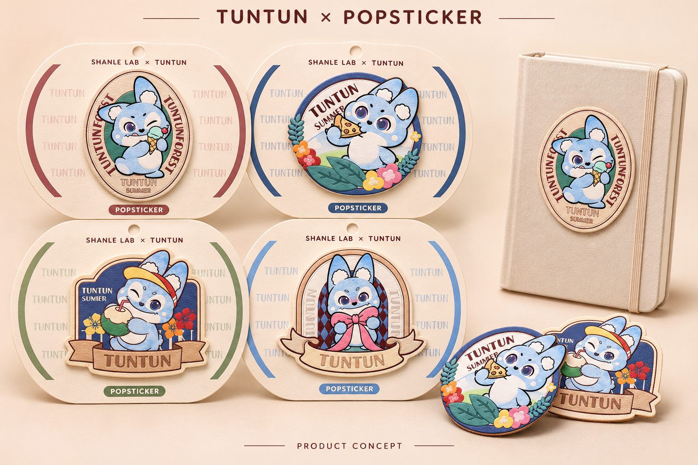
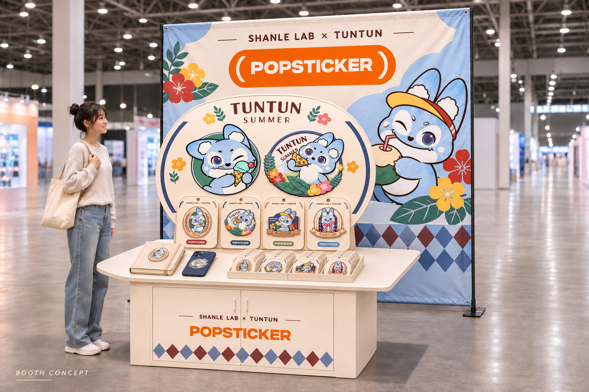
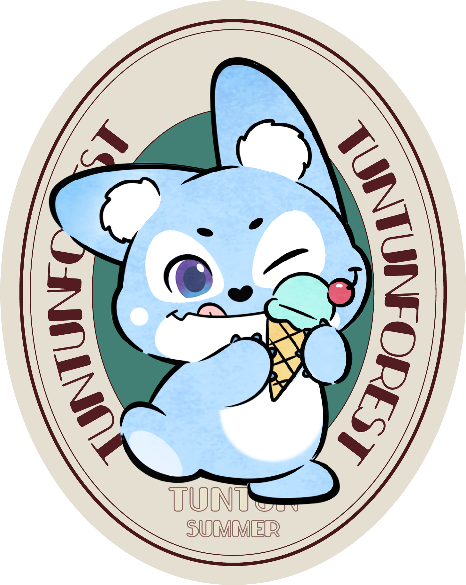
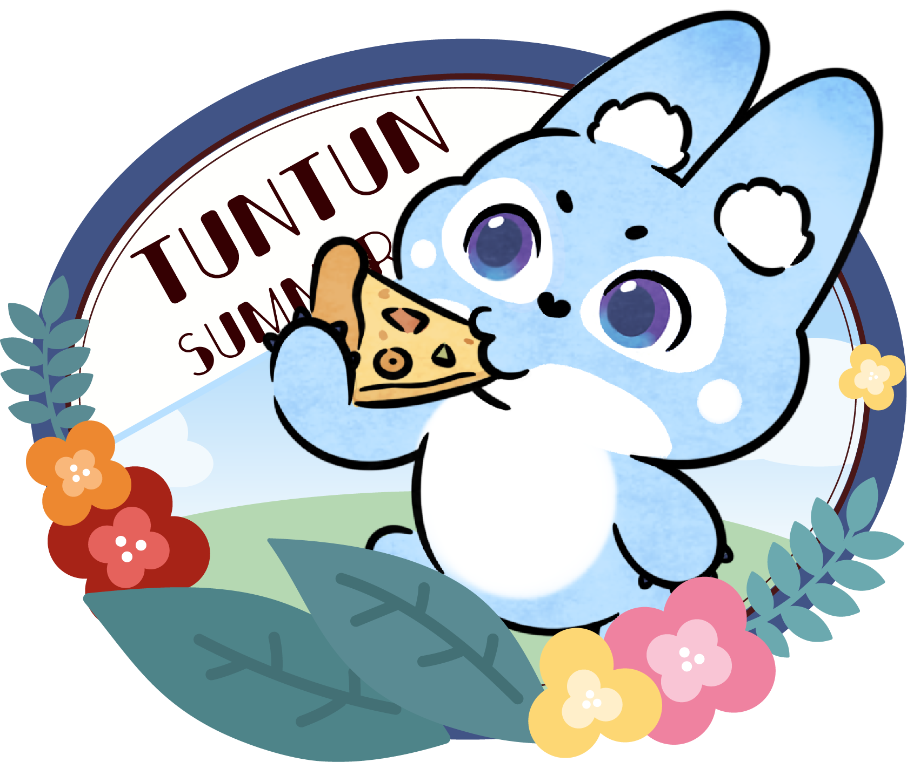
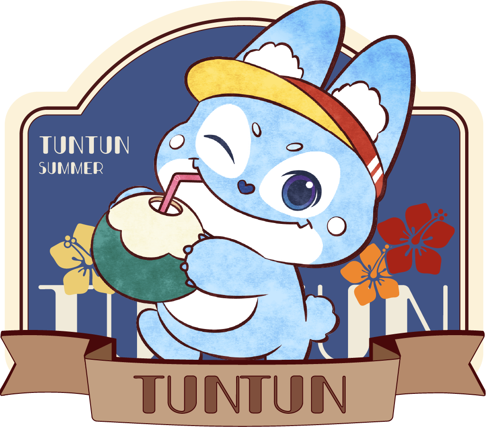
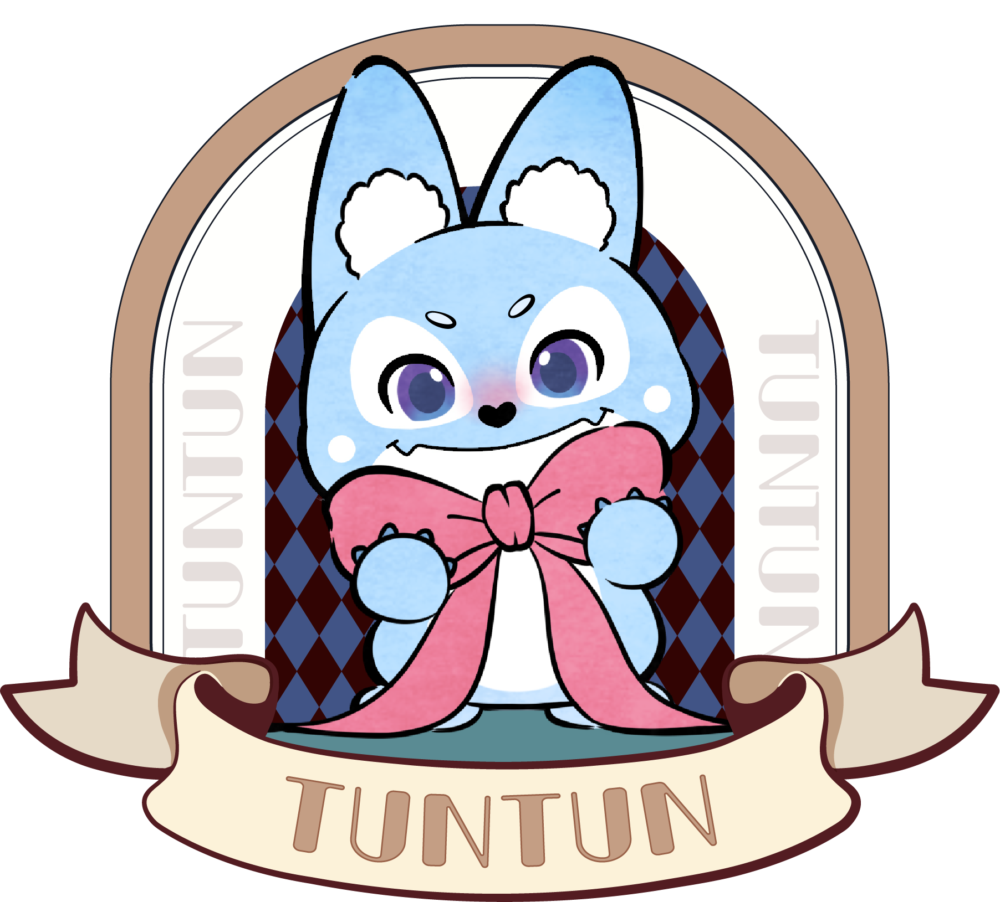

01 · 四款原画做成啵啵贴
保留原画徽章轮廓与场景，试做细纹皮面、薄层切边和轻微浮雕；沿用横向胶囊背卡。

冰淇淋、披萨、椰子与蝴蝶结四款。点击查看原尺寸图。
02 · 沿用 niko 现场的木托盘中岛
正面主推 TUNTUN，后方保留常规款挂货；用奶油白、浅蓝、海军蓝和鼠尾草绿融入暖木空间。
03 · 沿用 MLBB 当前的轻型展位
背景布与纸中岛组成整体，延续 POPSTICKER 胶囊识别，将赛事画面转译成 TUNTUN 的角色与复古徽章语言。

结构参考既有 MLBB 轻型方案；本图为 TUNTUN 独立应用候选。
对照四张完整原画

冰淇淋
披萨
椰子
蝴蝶结